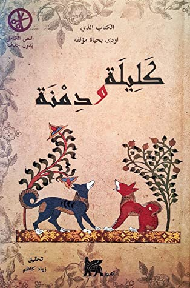

كتاب خليلة و دمنة

تروي مقدمة الكتاب رسالة من العالم الهندي (بيدبا) إلى الملك (دبشليم) ملك الهند. تتمحور شخصيات كتاب كليلة ودمنة حول الطيور والحيوانات والتي تعكس حال الشخصيات البشرية في المجتمع آنذاك، وهذا تمثيل عظيم يوضح فكرة الكاتب مع إثارة انتباه القارئ لتوصيل الغرض من الكتاب بشكل مبتكر وتفاعلي.
كتاب كليلة ودمنة يتكون من سلسلة من القصص التخيلية الأسطورية التي قامت بتغطية أكثر من موضوع. من أبرز هذه المواضيع هي علاقة الملك وشعبه التي طالما كانت محور اهتمام الناس في ذاك الوقت. تشمل القصص العديد من الأمثال والخطب التي أثرت نمط الكتابة وتوضح تأثير الكاتب على القارئ. وعندما انتشر الكِتاب واشتهر ما فيه من خطب وأمثلة، أمر (خسرو) الطبيب (بورزويا) بالسفر إلى الهند ونسخ ما في الكتاب وترجمته إلى اللغة البهلوية أو الفارسية. ونال الكتاب إعجاب الملك (فاختانج السادس) ملك جورجيا فأمر بترجمته إلى اللغة الجورجية في القرن الثامن عشر. وقد استخدم هذه الترجمة كمرجع لاحقاً في أثناء تحديد النص الأصلي للكتاب جنباً إلى جنب مع ترجمة سابقة غير مكتملة ولكن تم الاقتباس منها.
محتويات الكتاب
يتكون كتاب كليلة ودمنة من خمسة عشر فصلاً تحتوي جميعها على قصص خيالية أسطورية بأبطال تشبيهية من الطيور والحيوانات. ومن الشخصيات البارزة التي يدور حولها أحداث الكتاب هي شخصية الأسد الذي يلعب دور الملك وخادمه الثور (شتربه) بالإضافة إلى اثنين من حيوان ابن آوى وهما كليلة ودمنة.
كما يتضمن الكتاب أربعة أبواب أخرى، وردت في الصفحات الأولى من الكتاب وهي: باب المقدمة وباب بعثة برزويه إلى بلاد الهند وباب عرض كتاب ترجمة عبد الله بن المقفع وباب برزويه ترجمة البختكان.
وقد كان للنسخة العربية دوراً هاماً في انتشاره وشهرته في البلدان الأخرى حيث تم ترجمته إلى لغات أخرى عدّة عن طريق النسخة العربية.
الكتاب يحتوي على مجموعة من القصص الأخلاقية، موضوعة على لسان الحيوانات والطيور لتوجه رسائل أخلاقية معينة مثل الصداقة. تطول وتتسع القصة لتضم في جوانبها قصصًا أخرى متداخلة، إلى أن تصل في النهاية إلى حلقة متشابكة من القصص يفضي بعضها إلى بعض، عاقدةً عالمًا من الحكم والتجارب، ينهل منه القارئ مستزيدًا من تلك الحكم في كل قراءة جديدة للكتاب، منبهرًا برشاقة الأسلوب وعمق الفكرة والأسلوب المتميز والمبتكر.